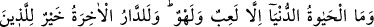
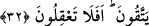

Kendini düşünmek, görüşünü söylemek rintlikte yoktur
Bu yolda kendini beğenmek, görüşünü söylemek küfürdür
Bazıları şöyle demişlerdir: “Nefisle nefisten kurtulmak mümkün değildir. Nefisten
kurtulmak, ancak Allah Teâlâ ile mümkün olur.
Ebû Abdullah Muhammed b. Ali et-Tirmizî el-Hakîm (k.s.) şöyle demiştir:
“Zikrullah, kalbi nemlendirir ve yumuşatır. Kalb, zikirden uzak kaldığı vakit onu nefsin
harareti ve şehvetlerin ateşi kaplar. Böylece kalb kasvetlenir, katılaşır ve kurur. Kalbe
tâbi olan âzâlar, ibâdât ü tâattan uzaklaşır. Bu süre uzadıkça kalp kuru ağaç gibi kırılır.
Böyle bir ağaç ise ancak kesilmeye yarar ve ateşe yakacak olur. Bu derekeye düşmekten
Allah’a sığınırız.
Zikir, tevhid ve onların ehline tâbi olmak asılların aslıdır, her işin başıdır.
Ali b. Muvaffak’ın şöyle dediği hikaye olunur: “Senelerden birinde hacca gitmek
üzere bir binekle yola çıkmıştım. Yolda yaya olarak giden bazı insanlara rastladım.
Onlarla yarenlik etmek hoşuma gitti. Bineğimden indim ve onlardan birini ona
bindirdim. Kendim de onlarla birlikte yürüdüm. Çöle ulaştık ve yoldan çıktık. Sonra
yorulduk ve istirahat etmek üzere uyuduk.
Rüyamda bazı cariyeler gördüm. Ellerinde altından leğenler ve gümüşten ibrikler
vardı. Bunlarla yürüyenlerin ayaklarını yıkıyorlardı. Ayakları yıkanmayan sadece ben
kalmıştım.
Onlardan biri arkadaşlarına: “Bu onlardan değil mi?” dedi. Arkadaşları: “Onun
bineği var.” dediler. Sonra içlerinden biri şöyle dedi: “Hayır, bu da onlardan. Çünkü
onlarla birlikte yürümeyi seviyor.” Bunun üzerine benim ayaklarımı da yıkadılar. O
yıkama ile bütün yorgunluğum bir anda gitti. Dinç ve dinlenmiş olarak uyandım. Bu
inançla yürüdüğüm müddetçe, yıkamanın tesiriyle oluşan ferahlığı daima hissettim.”
Bir düşünün, Nebi (a.s.) ile beraber yürüyen bahtiyar insanların makamı ne kadar
yücedir!
Eğer Mekkeli kâfirler ve müşrik Araplar, Rasûlullah (s.a.)’a kulak verselerdi, ona
indirilen zikre (Kur’an’a) tâbi olsalardı, muhakkak kurtulurlardı. Üzerlerindeki günah
yüklerini bütünüyle üzerlerinden atarlardı ve Firdevs cennetine yürürlerdi. Ancak
Allah, dilediğine hidayet verir.
32. Dünya hayatı bir oyun ve eğlenceden başka bir şey değildir. Müttakî olanlar
için ahiret yurdu muhakkak ki daha hayırlıdır. Hâla akıl erdiremiyor musunuz?
“Dünya hayatı” dünyâ hayatı ile ilgili işler insanları oyalayan, geçici menfaatı ile